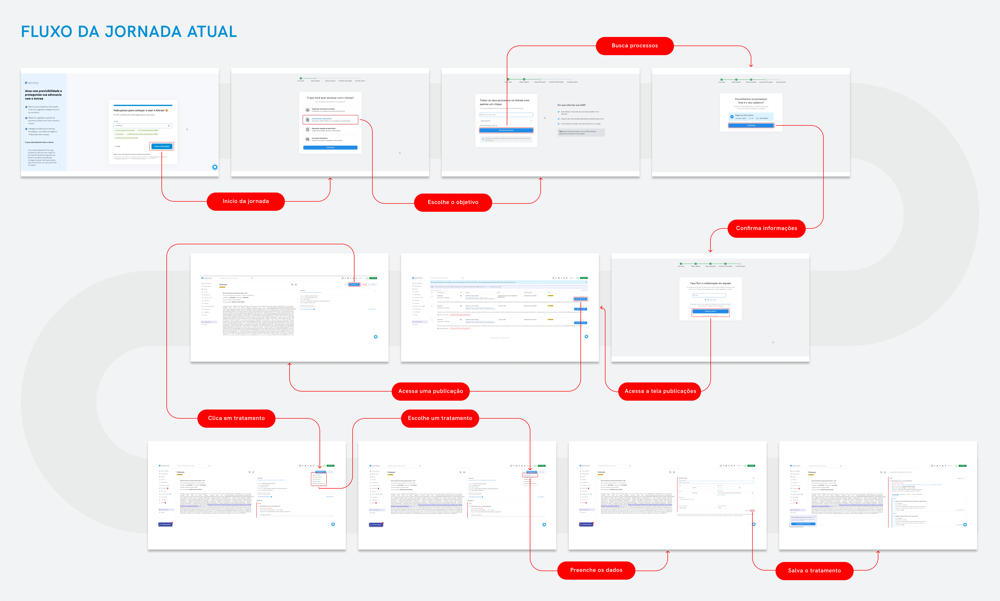
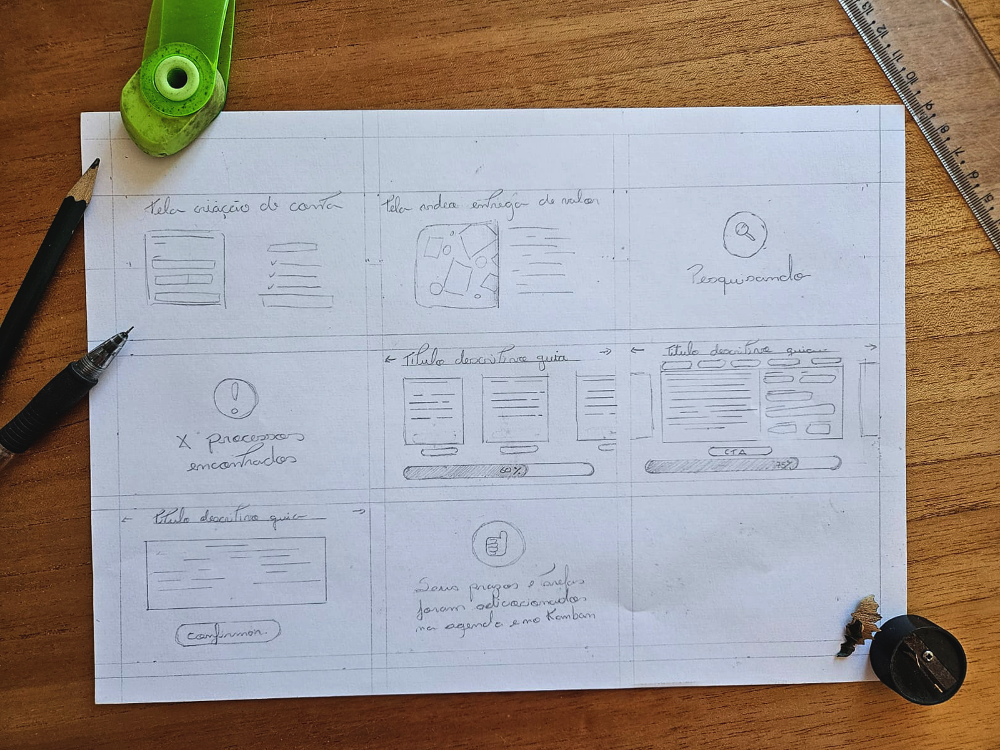

UX Research
Growth Design
{{ t.tagPrototype }}
{{ t.heroKicker }}
{{ t.heroTitle }}
{{ t.heroSub }}
< ⅓
{{ t.stat1 }}
10 → 7
{{ t.stat2 }}
{{ t.metaCandidate }}
Ulisses Laffranchi
{{ t.metaRole }}
{{ t.metaRoleValue }}
· Growth
· Growth
{{ t.metaDeliverable }}
{{ t.tagPrototype }}
{{ t.metaDate }}
{{ t.metaDateValue }}
01
{{ t.h01 }}
{{ t.tldrKicker }}
{{ t.tldr1a }} wow effect {{ t.tldr1b }}
{{ t.tldr2 }}
{{ t.tldr3a }}{{ t.tldr3strong }}{{ t.tldr3b }}
02
{{ t.h02 }}
{{ t.h02sub }}
{{ t.p02 }}
{{ t.feat1t }}
{{ t.feat1p }}
{{ t.feat2t }}
{{ t.feat2p }}
{{ t.feat3t }}
{{ t.feat3p }}
03
{{ t.h03 }}
{{ t.h03sub }}
{{ t.p03 }}
{{ t.hypKicker }}
{{ t.hypNote }}
{{ h.n }}
{{ h.text }}
{{ t.auditTitle }}
{{ t.auditSub }}
| {{ t.thHeuristic }} | {{ t.thEval }} | {{ t.thNote }} |
|---|---|---|
| {{ row.name }} | {{ row.status }} | {{ row.note }} |
04
{{ t.h04 }}
{{ t.h04sub }}
{{ t.p04 }}

⤢{{ t.zoomHint }}
{{ t.fig1caption }}
05
{{ t.h05 }}
{{ t.h05sub }}
{{ t.mainMetricKicker }}
{{ t.mainMetric }}
{{ t.secMetricsT }}
{{ t.secMetricsP }}
{{ t.valueMomentT }}
{{ t.valueMomentP }}
{{ t.audienceT }}
{{ t.audienceP }}
{{ t.riskT }}
{{ t.riskP }}
06
{{ t.h06 }}
{{ t.h06sub }}
01{{ t.opp1t }}
{{ t.opp1p }}
02{{ t.opp2t }}
{{ t.opp2p }}
03{{ t.opp3t }}
{{ t.opp3p }}
07
{{ t.h07 }}
{{ t.h07sub }}
{{ t.p07 }}
R
Reach
{{ t.riceR }}
I
Impact
{{ t.riceI }}
C
Confidence
{{ t.riceC }}
E
Effort
{{ t.riceE }}
08
{{ t.h08 }}
{{ t.h08sub }}
{{ t.p08 }}
{{ t.exp1t }}
{{ t.exp1p }}
{{ t.exp2t }}
{{ t.exp2p }}
{{ t.exp3t }}
{{ t.exp3p }}
{{ t.exp4t }}
{{ t.exp4p }}
{{ t.rationaleTitle }}
{{ t.rationale1 }}
{{ t.rationale2 }}

{{ t.fig2caption }}
09
{{ t.h09 }}
{{ t.h09sub }}
{{ t.currentFlowT }}
- {{ s }}
{{ t.proposedFlowT }}
- {{ t.pf1 }}
- {{ t.pf2 }} {{ t.newBadge }}
- {{ t.pf3 }}
- {{ t.pf4 }}
- {{ t.pf5 }}
- {{ t.pf6 }}
- {{ t.pf7 }} aha moment
{{ t.flowNote }}
{{ t.psychTitle }}
{{ t.psych1t }}
{{ t.psych1p }}
{{ t.psych2t }}
{{ t.psych2p }}
{{ t.psych3t }}
{{ t.psych3p }}
{{ t.psych4t }}
{{ t.psych4p }}
{{ t.jakobT }}
{{ t.jakobP }}
10
{{ t.h10 }}
{{ t.h10sub }}
{{ t.p10 }}
{{ sc.step }}{{ sc.title }}
{{ sc.note }}
{{ t.nextTitle }}
{{ t.nextKicker }}
{{ t.next1t }}
{{ t.next1p }}
{{ t.next2t }}
{{ t.next2p }}
{{ t.next3t }}
{{ t.next3p }}
{{ t.next4t }}
{{ t.next4p }}
{{ t.navigationLabel }}
{{ t.backToPortfolio }}
{{ t.footer }}
{{ t.fig1caption }}